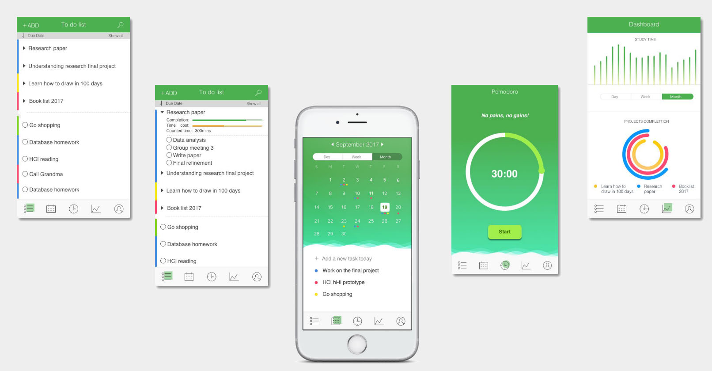
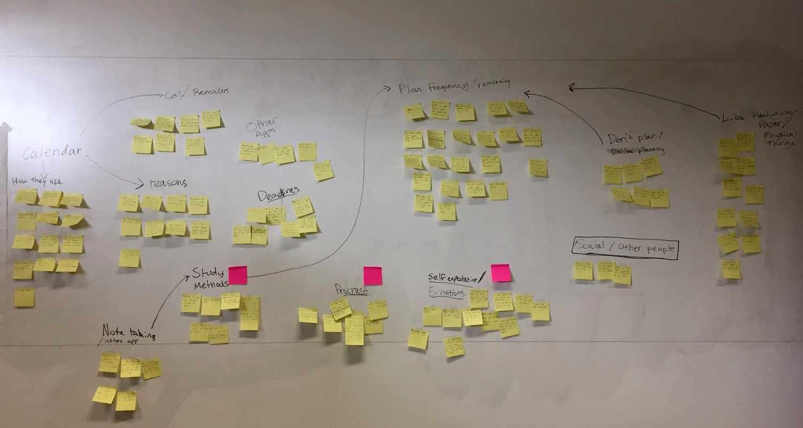

Selected Project Details

Class: Human Computer InteractionAug. – Dec. 2017
As a member of a three–person team, we prototyped the design for a mobile application intended to help users curb bad procrastination habits.
The design process consisted of the following stages:
- Contextual Inquiry
- Conducted user research with 10 participants.
- Collected qualitative and quantitative data from interview questions designed to illuminate existing study habits and tendencies to procrastinate
- Contextual Analysis

Includes wireframes, hi- and low-fidelity prototypes, and results of user testing and research througout.
"Motivatr"

Group project focused on designing prototypes for a mobile app intended to help users curb their bad procrastination habits. Design process encompassed the full UX cycle. Includes wireframes, hi- and low-fidelity prototypes, and results of user testing and research througout.